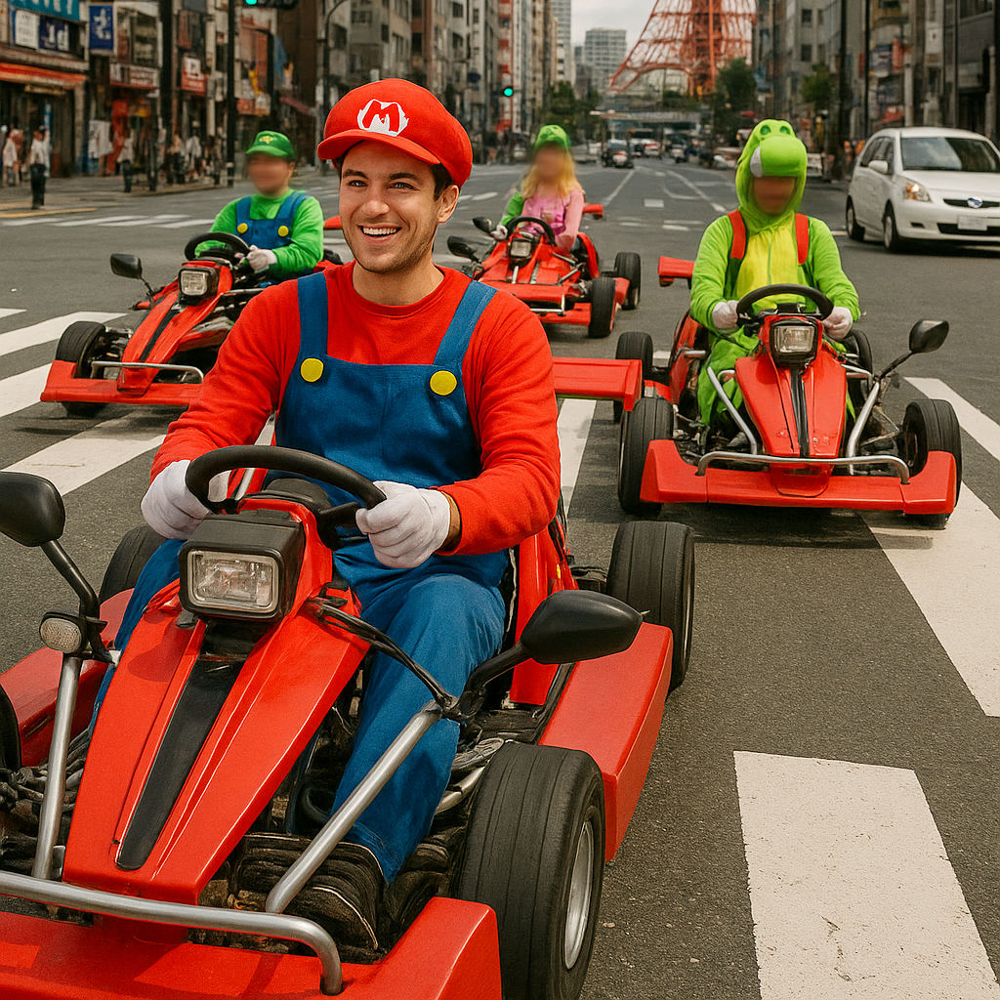

Expérience de Go-Kart au Japon – Tours Uniques en Kart à Travers les Rues de Tokyo

Vivez l'excitation de conduire un go-kart à travers les rues animées de Tokyo, une manière unique d'explorer la ville tout en profitant de la culture vibrante du Japon. Nos tours en go-kart vous permettent de conduire des karts homologués en portant des costumes amusants, alliant tourisme et aventure palpitante.
À Quoi S'attendre des Tours en Go-Kart
Les tours offrent une expérience sûre et excitante, adaptée aux débutants comme aux conducteurs expérimentés. Les parcours traversent des quartiers célèbres tels que Shibuya, Akihabara et Odaiba, vous offrant une vue rapprochée de l'énergie urbaine de Tokyo depuis le volant d'un puissant go-kart homologué pour la route.
Véhicules et Mesures de Sécurité
Nos go-karts sont équipés des dernières fonctionnalités de sécurité et sont conformes aux lois japonaises. Avant le tour, vous recevrez une formation complète, un casque et un équipement de protection. Des guides expérimentés accompagneront le groupe pour garantir une expérience fluide et sécurisée tout au long du parcours.
Réservation et Options de Tours
Plusieurs tours de différentes durées et itinéraires sont disponibles, allant des balades d'une heure aux expériences de demi-journée. Les tours personnalisables vous permettent de choisir votre parcours en fonction de vos intérêts, comme le shopping, les sites historiques ou les quartiers de divertissement. Nous proposons également des tours privés pour les groupes souhaitant une expérience sur mesure.
Comment Participer aux Tours en Go-Kart
Les tours partent de points centraux de Tokyo, facilement accessibles en transports publics, comme Shinjuku ou Shibuya. Il est nécessaire de posséder un permis de conduire international ou japonais valide. Il est conseillé de réserver à l'avance, surtout le week-end et pendant les jours fériés, pour garantir une place et recevoir toutes les informations nécessaires.
Pourquoi Choisir l'Expérience en Go-Kart?
C'est une manière inoubliable de découvrir Tokyo sous un angle différent, alliant fun, culture et adrénaline. Idéal pour ceux en quête de sensations fortes, pour les touristes recherchant une activité originale ou pour les groupes souhaitant vivre une expérience mémorable dans la capitale japonaise.
Informations Utiles pour les Visiteurs
- 🌸 Points de départ : Lieux de rencontre à Shinjuku, Shibuya ou Odaiba
- 🌸 Horaires des tours : 9h00 – 18h00 (varie selon le tour)
- 🌸 Exigences : Permis de conduire international ou japonais valide
- 🌸 À apporter : Vêtements confortables, permis de conduire, lunettes de soleil
Tags : go-kart Japon, kart Tokyo, tours de conduite Tokyo, visites Tokyo, kart autoguidé Tokyo, expériences uniques Japon
Vous planifiez de participer à un tour en go-kart au Japon ?
Pour une expérience immersive et sécurisée, nous vous recommandons de réserver une guide privé certifiée de notre équipe. Toutes nos guides sont des professionnels licenciés, officiellement reconnus par le gouvernement japonais, et proposent des tours personnalisés en fonction de vos intérêts. Contactez votre guide sélectionné à l'avance pour confirmer la disponibilité et obtenir toute l’assistance nécessaire pour votre voyage.